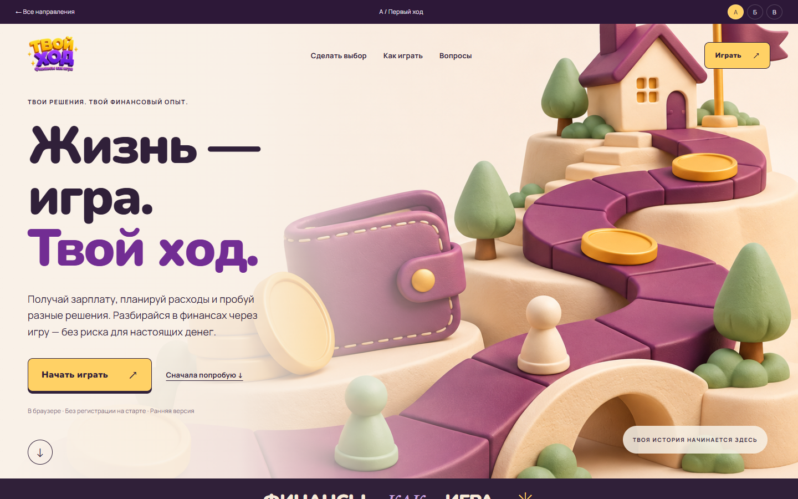
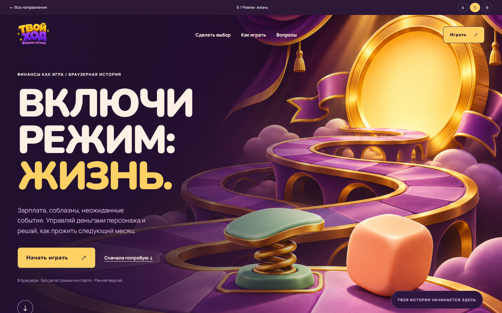
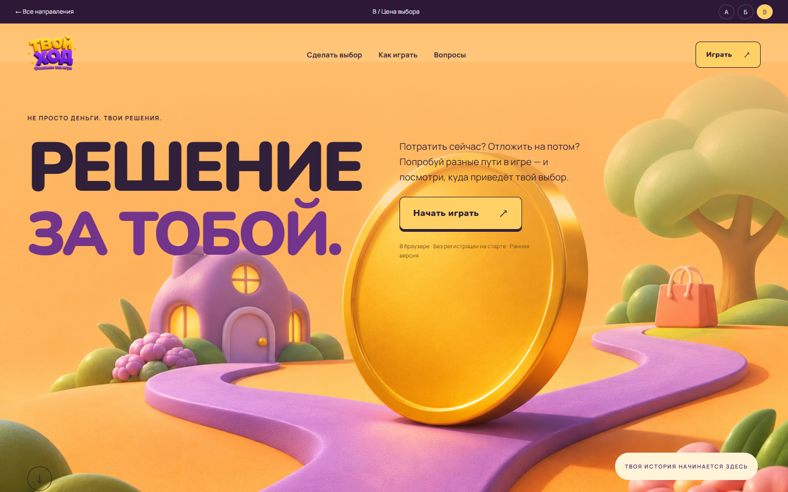

НОВЫЙ АВТОРСКИЙ РАУНД
Игра начинается
с первого впечатления.
Три новых направления. У каждого — собственная сцена, композиция и характер. Внутри — одна и та же настоящая игра.

А / РАЗВИТИЕ ТЕКУЩЕЙ КОНЦЕПЦИИПервый ход
Тёплая настольная история. Мягкий объём, сливовый маршрут и ощущение игры в руках.
Открыть лендинг ↗
Б / НОВАЯ АРТ-ДИРЕКЦИЯРежим: жизнь
Кинематографичная сцена. Большой игровой мир, золото и выразительный тёмный экран.
Открыть лендинг ↗
В / НОВАЯ АРТ-ДИРЕКЦИЯЦена выбора
Яркий игровой плакат. Одна развилка, крупные слова и цепочка твоих решений.
Открыть лендинг ↗Предыдущие направления отклонены. Эти страницы — новый локальный раунд для выбора, без публикации. Иллюстрации — художественные метафоры, не дополнительные механики игры.